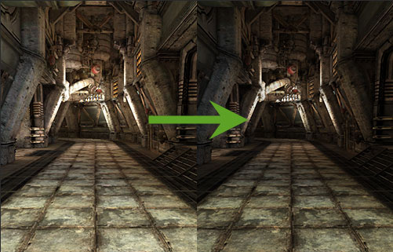
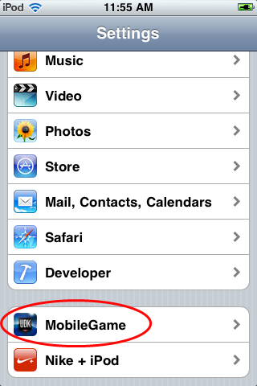
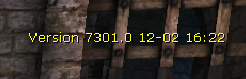

UDN
Search public documentation:
UnrealOniOSCH
English Translation
日本語訳
한국어
Interested in the Unreal Engine?
Visit the Unreal Technology site.
Looking for jobs and company info?
Check out the Epic games site.
Questions about support via UDN?
Contact the UDN Staff
日本語訳
한국어
Interested in the Unreal Engine?
Visit the Unreal Technology site.
Looking for jobs and company info?
Check out the Epic games site.
Questions about support via UDN?
Contact the UDN Staff
虚幻引擎 3： Apple iOS概述
概述
入门指南
Gamma校正

启用Gamma 校正
默认情况下不会启用移动设备平台上的 Gamma 校正。要利用移动设备游戏的 gamma 校正，请启用您的地图的 World Properties（世界属性） 中的 Use Gamma Correction（使用 Gamma 校正） 属性。
性能注意事项
移动设备上的 Gamma 校正可能会对性能产生非常明显的影响。它主要指的是一种可以在以后的移动设备上使用的功能。当前。iPad 2 是唯一一种真正可以使用 gamma 校正运行游戏的设备。VGA输出
- 您必须在命令行上使用-vga运行游戏。
- 您必须在游戏启动之前连接VGA转接器。
- 它查找VGA设备获得所支持的分辨率，并选择最高的最高分辨率，其宽度不高于1024(该宽度通常用于匹配iPad的分辨率1024x768) 。
- 加载 屏幕/视频 通常看上去是不正确的。
- 触摸输入是在设备上固体的粉红色区域完成的。但是，目前没有输入位置的重新映射，所以如果分辨率选为640x480，您将需要使用粉红色区域左上角的640x480部分的区域。
通过iOS设置应用程序进行命令行设置
//depot/UnrealEngine3/UDKGame/Build/IPhone/Resources/Settings/Settings.bundle/Root.plist //depot/UnrealEngine3/UDKGame/Build/IPhone/Resources/Settings/Distro_Settings.bundle/Root.plist这些是您在Settings（设置）中看到的东西：
|  |  |
<dict>
<key>Type</key>
<string>PSToggleSwitchSpecifier</string>
<key>Title</key>
<string>Benchmarking?</string>
<key>Key</key>
<string>-benchmark</string>
<key>DefaultValue</key>
<false/>
</dict>
<dict>
<key>Type</key>
<string>PSTextFieldSpecifier</string>
<key>Title</key>
<string>Benchmark seconds</string>
<key>Key</key>
<string>-benchmarkseconds=</string>
<key>KeyboardType</key>
<string>NumberPad</string>
</dict>
有很多项需要设置，每项占两行，<key(关键信息)>在第一行，然后第二行依赖于那个关键信息。现在我们详细介绍它们： - Type(类型) - 这是设置的类型。PSToggleSwitchSpecifier 是一个 On/Off(打开/关闭) 开关，PSTextFieldSpecifier是个文本框。
- Title(名称) - 这是显示给用户的信息 (如果它太长，文本域将没有太大的空间来显示这些文本)。
- Key(关键信息) - 这是最重要的信息。这个信息将会放到命令行上。它必须以 -= 或
?开头。对于Toggles(切换开关)，如果Toggle设置为On（打开），那么将会把Key(关键信息)放到命令行上。对于TextFields(文本域)，如果文本不为空，那么将会把那个Key（关键信息）放到命令行上，后面跟着用户输入的文本。 - DefaultValue(默认值) - 您可以把设置的值初始化为您期望的任何值。
- KeyboardType(键盘类型) - 使用的键盘类型。请参照这些文档获得关于TextFields(文本域)的更多信息。
设置应用程序的非命令行应用
版本字符串

当UnrealFrontend打包iOS应用程序包时，它为引擎的每个版本和iOS可执行文件的编译日期添加了一个 键/值 对。这个key（键）称为EpicAppVersion。这个值显示在非-发行版本上。但是，您可以强制设置它的显示状态的开关情况。 正如在UDKGame的UDKGame's Config\Mobile\MobileEngine.ini中所看到的那样，通过Engine.ini文件来实现这个处理：[Build.Version] bForceShowAppVersion=False bForceHideAppVersion=False